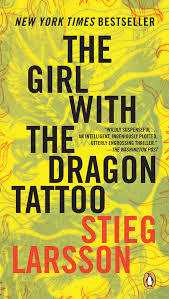

Since I enjoy reading and I enjoy hearing about what others are reading, I figured I should probably put up a list somewhere of the books that I enjoyed reading during 2014. If you have any recommendations, please post them in the comments! One can never have too many books on one's list of books to read.
The Martian
If you have to read one book from my list, I recommend it be this one. It only took me 2 days (and 2 rather sleepless nights) to get through it. It's a fantastic thriller and as a bonus you get to learn about Mars since most of the science is accurate. The book is about the first manned mission to Mars, and as you might imagine Something Goes Wrong.
The Laundry Files (Series)
This series is so freakin' good. It's basically James Bond + Lovecraftian Horrors + Comedy and it's pure gold. You follow around Bob Oliver Francis Howard (aka
B.O.F.H) who lives in a world where the right piece of code can be used to summon Eldritch horrors from the deep. But of course there's a government agency tasked with protecting us all from having our brains eaten out.
The Coming Swarm
I'm not finished this one yet, but it's been a very interesting read so far. The author make a compelling argument that DDoS actions should be considered a political act just like a sit in or a blockade.
The Girl With the Dragon Tattoo

This book was very slow to start, but it quickly got hard to put down. There are some pretty disturbing scenes, so if that's not your thing I don't recommend it. If you can stomach it though, it's a pretty good read with lots of really good twists.
Sufrace Detail
I love Iain M Banks. All of The Culture novels are fantastic, and this one is no exception. The plots are too numerous to list, but one of the fascinating ideas in this book is that of a Virtual Hell. If you suppose that minds can be simulated and run on computers, there's no reason why you couldn't digitize someone's mind before they die and then upload it to a virtual hell if they had failed to live a good life. If you've read any of other culture novels, you'll enjoy getting a look at what a Mind with some severe psychopathic tendencies looks like and how it can exist in the Culture.
Count Zero
This is a sequel (kind of) to Neuromancer, but all of the characters are different. I found this book much easier to follow compared to Neuromancer, but Gibson still writes in a way that I find very difficult to follow. My friend said it best when he described it as "poetry"